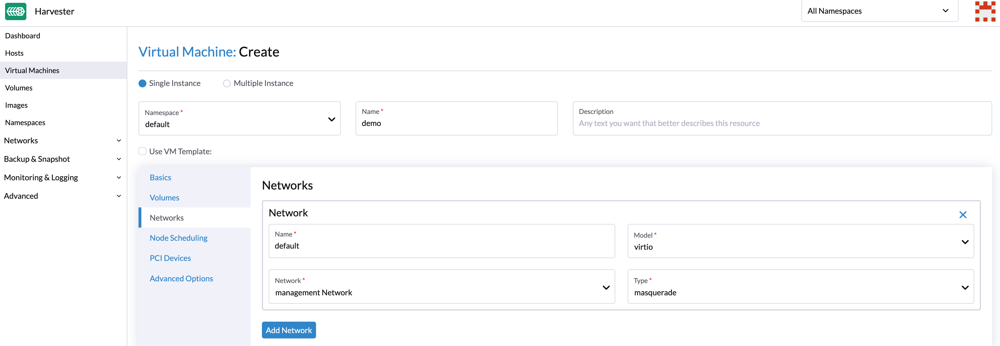
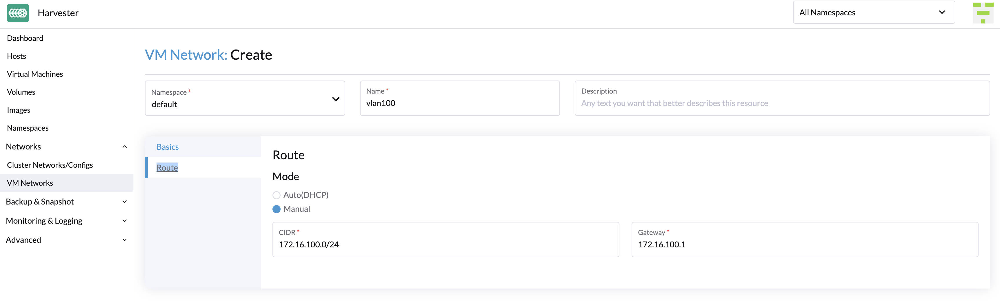

VM-Netzwerk
SUSE Virtualization bietet drei Arten von Netzwerken für virtuelle Maschinen (VMs) an, darunter:
-
Management-Netzwerk
-
VLAN-Netzwerk
-
ungetaggtes Netzwerk
Das Management-Netzwerk wird normalerweise für VMs verwendet, deren Datenverkehr nur innerhalb des Clusters fließt. Wenn Ihre VMs eine Verbindung zum externen Netzwerk benötigen, verwenden Sie das VLAN-Netzwerk oder das ungetaggte Netzwerk.
SUSE Virtualization hat auch das Storage-Netzwerk eingeführt, um den Speicherverkehr von anderen clusterweiten Arbeitslasten zu trennen. Bitte beziehen Sie sich auf das Dokument zum Storage-Netzwerk für weitere Details.
Management-Netzwerk
SUSE Virtualization verwendet Canal als sein Standard-Management-Netzwerk. Es handelt sich um ein integriertes Netzwerk, das direkt aus dem Cluster verwendet werden kann. Standardmäßig kann die Management-Netzwerk-IP einer VM nur innerhalb der Cluster-Knoten erreicht werden, und die Management-Netzwerk-IP ändert sich nach dem Neustart der VM. Dies ist ein untypisches Verhalten, das beachtet werden muss, da erwartet wird, dass die VM-IPs nach einem Neustart unverändert bleiben.
Sie können jedoch das Kubernetes Service-Objekt nutzen, um eine stabile IP für Ihre VMs im Management-Netzwerk zu erstellen.
Wie man das Management-Netzwerk verwendet
Da das Management-Netzwerk integriert ist und keine zusätzlichen Operationen erfordert, können Sie es direkt bei der Konfiguration des VM-Netzwerks hinzufügen.

|

Wenn eine Ihrer Arbeitslasten die Übertragung von Netzwerkverkehr umfasst, müssen Sie den entsprechenden MTU-Wert für die betroffenen VM-Netzwerkschnittstellen und Brücken angeben. |
VLAN-Netzwerk
Der Netzwerk-Controller nutzt die multus und bridge CNI-Plugins, um sein angepasstes L2-Brücken-VLAN-Netzwerk zu implementieren. Es hilft, Ihre VMs mit der Netzwerkschnittstelle des Hosts zu verbinden und kann von internen und externen Netzwerken über den physischen Switch erreicht werden.
Erstellen Sie ein VM-Netzwerk
-
Gehen Sie zu Netzwerke → VM-Netzwerke.
-
Wählen Sie Erstellen.
-
Konfigurieren Sie die folgenden Einstellungen:
-
Namespace
-
Name
-
Beschreibung (optional)
-
-
Konfigurieren Sie auf der Registerkarte Basis die folgenden Einstellungen:
-
Typ: Wählen Sie L2VlanNetzwerk.
-
Modus: Wählen Sie Zugriff.
-
Vlan ID
-
Cluster-Netzwerk
Virtuelle Maschinen-Netzwerke erben die MTU der Netzwerkkonfiguration des zugehörigen Cluster-Netzwerks. Dies stellt sicher, dass virtuelle Maschinen von der bestmöglichen Hardwareleistung profitieren. Sie können keine unterschiedliche MTU für virtuelle Maschinennetzwerke festlegen.
Wenn Sie die MTU an den physischen NICs des Cluster-Netzwerk-Uplinks ändern, erben die neu erstellten virtuellen Maschinennetzwerke automatisch die neue MTU. Die bestehenden virtuellen Maschinennetzwerke werden ebenfalls automatisch aktualisiert. Für weitere Informationen siehe Ändern der MTU einer Netzwerkkonfiguration mit einem angeschlossenen Speichernetzwerk und Ändern der MTU einer Netzwerkkonfiguration ohne angeschlossenes Speichernetzwerk.
Der SUSE Virtualization Webhook erlaubt es Ihnen nicht, die MTU direkt auf VM-Netzwerke zu ändern.
-
-
Wählen Sie auf der Registerkarte Route eine Option aus und geben Sie dann die zugehörigen IPv4-Adressen an.
-
Auto(DHCP): Der Netzwerk-Controller ruft die CIDR- und Gateway-Adressen vom DHCP-Server ab. Sie können die Adresse des DHCP-Servers angeben.

-
Manuell: Geben Sie die CIDR- und Gateway-Adressen an.

SUSE Virtualization verwendet die Informationen, um zu überprüfen, dass alle Knoten auf das VM-Netzwerk zugreifen können, das Sie erstellen. Falls dies der Fall ist, zeigt die Spalte Netzwerkverbindung auf dem Bildschirm VM-Netzwerke an, dass das Netzwerk aktiv ist. Andernfalls zeigt der Bildschirm an, dass ein Fehler aufgetreten ist.
-
Erstellen Sie eine VM mit VLAN-Netzwerk.
Sie können jetzt eine neue VM mit dem oben konfigurierten VLAN-Netzwerk erstellen:
-
Klicken Sie auf die Schaltfläche Erstellen auf der Seite Virtuelle Maschinen.
-
Geben Sie die erforderlichen Parameter an und klicken Sie auf die Registerkarte Netzwerke.
-
Entweder konfigurieren Sie das Standardnetzwerk als VLAN-Netzwerk oder wählen Sie ein zusätzliches Netzwerk aus, das hinzugefügt werden soll.
ungetaggtes Netzwerk
Wie bekannt ist, hat der Datenverkehr unter einem VLAN-Netzwerk ein VLAN-ID-Tag, und wir können das VLAN-Netzwerk mit PVID (Standard 1) verwenden, um mit normalem, nicht getaggtem Datenverkehr zu kommunizieren. Einige Netzwerkgeräte erwarten jedoch möglicherweise nicht, eine explizit getaggte VLAN-ID zu erhalten, die mit dem nativen VLAN des Switches übereinstimmt, zu dem der Uplink gehört. Das ist der Grund, warum wir das ungetaggte Netzwerk bereitstellen.
Wie man ein ungetaggtes Netzwerk verwendet
Die Nutzung des ungetaggten Netzwerks ist ähnlich wie beim VLAN-Netzwerk.
Um ein neues ungetaggtes Netzwerk zu erstellen, gehen Sie zur Seite Netzwerke > VM-Netzwerke und klicken Sie auf die Schaltfläche Erstellen. Sie müssen den Namen angeben, den Typ Untagged Network auswählen und das Cluster-Netzwerk auswählen.

|
SUSE Virtualization unterstützt das Aktualisieren und Löschen von VM-Netzwerken. Stellen Sie sicher, dass Sie alle betroffenen VMs beenden, bevor Sie VM-Netzwerke aktualisieren oder löschen. |
VLAN-Trunk-Netzwerk
-
Gehen Sie zu Netzwerke → VM-Netzwerke.
-
Wählen Sie Erstellen.
-
Konfigurieren Sie die folgenden Einstellungen:
-
Namespace
-
Name
-
Beschreibung (optional)
-
-
Konfigurieren Sie auf der Registerkarte Basis die folgenden Einstellungen:
-
Typ: Wählen Sie L2VlanNetwork.
-
Modus: Wählen Sie Trunk aus.
-
Minimum VLAN ID: Geben Sie die Start-VLAN-ID eines Bereichs an.
-
Höchst-VLAN-ID: Geben Sie die End-VLAN-ID eines Bereichs an.
-
Cluster-Netzwerk: Wählen Sie das zugehörige Cluster-Netzwerk aus.
Sie können mehrere, sich überschneidende VLAN-ID-Bereiche angeben.
-
Wenn eine virtuelle Maschine an ein VLAN-Trunk-Netzwerk angeschlossen ist, dürfen das Gastbetriebssystem und die Anwendungen Pakete mit beliebigen VLAN-IDs innerhalb des angegebenen Bereichs senden und empfangen.
|
Sie können den Netzwerktyp nur ändern, wenn alle angeschlossenen virtuellen Maschinen gestoppt sind. Wenn Sie den Netzwerktyp von |
Overlay-Netzwerk (Experimentell)
Der Netzwerk-Controller nutzt Kube-OVN, um ein OVN-basiertes virtualisiertes Netzwerk zu erstellen, das fortschrittliche SDN-Funktionen wie virtuelle private Clouds (VPCs) und Subnetze für virtuelle Maschinen-Workloads unterstützt.
Ein Overlay-Netzwerk stellt einen virtuellen Schicht-2-Switch dar, der den Datenverkehr zwischen virtuellen Maschinen kapselt und weiterleitet. Dieses Netzwerk kann mit dem im VPC erstellten Subnetz verbunden werden, sodass virtuelle Maschinen auf das interne virtualisierte Netzwerk zugreifen und auch das externe Netzwerk erreichen können. Die gleichen virtuellen Maschinen können jedoch aufgrund der aktuellen VPC-Einschränkungen nicht von externen Netzwerken wie VLANs und ungetaggten Netzwerken erreicht werden.

Erstellen eines Overlay-Netzwerks
-
Gehen Sie zu Netzwerke → Virtuelle Maschinen-Netzwerke und klicken Sie dann auf Erstellen.

-
Auf dem Bildschirm Virtuelle Maschinen Netzwerk:Erstellen geben Sie einen Namen für das Netzwerk an.
-
Wählen Sie auf der Registerkarte Basis
OverlayNetworkals Netzwerktyp aus. -
Klicken Sie auf Erstellen.
Einschränkungen von Overlay-Netzwerken
Die Implementierung von Overlay-Netzwerken in SUSE Virtualization v1.6 hat die folgenden Einschränkungen:
-
Overlay-Netzwerke, die von Kube-OVN unterstützt werden, können nur auf
mgmt(dem integrierten Management-Netzwerk) erstellt werden. -
Standardmäßig sind die Einstellungen
enableDHCPunddhcpV4Optionsnicht konfiguriert, sodass keine Standardroute auf virtuellen Maschinen existiert, die an ein Kube-OVN Overlay-Subnetz angeschlossen sind. Versuche, auf externe Ziele zuzugreifen, schlagen fehl, bis die Standardroute im Gastbetriebssystem korrekt konfiguriert ist. Sie können eine der folgenden Behelfslösungen durchführen:-
Fügen Sie die Gateway-IP des Subnetzes manuell als Standardroute der virtuellen Maschine hinzu.
-
Verwenden Sie die
managedTapBindung: Bearbeiten Sie die YAML-Konfiguration des angeschlossenen Subnetzes und überprüfen Sie, ob das Feld.spec.enableDHCPauftruegesetzt ist. Bearbeiten Sie als Nächstes die YAML-Konfiguration der virtuellen Maschine und ändern Sie die Schnittstellendefinition, um die Bindung zu verwenden.interfaces: - binding: name: managedtap model: virtio name: default
-
-
Kube-OVN "native" Lastenausgleicher sind noch nicht integriert, da dies grundlegende Änderungen an der Upstream-Codebasis erfordert. Kube-OVN fungiert derzeit als primäres CNI-Plugin für jeden Cluster.
-
Unterlay-Netzwerke sind weiterhin nicht verfügbar. Folglich können Sie ein Subnetz nicht direkt einem physischen Netzwerk zuordnen, und externe Hosts können keine virtuellen Maschinen erreichen, die sich in einem Overlay-Subnetz befinden.
-
Das Feld
natOutgoingist standardmäßig in allen Subnetzen (sowohl in Standard- als auch in benutzerdefinierten VPCs) auffalsegesetzt. Nur Subnetze, die zum Standard-VPC gehören, können das Internet erreichen, nachdem Sie den Wert auftruegeändert und die Standardroute konfiguriert haben. Subnetze, die in benutzerdefinierten VPCs erstellt wurden, können ohneVpcNatGatewayUnterstützung nicht auf das Internet zugreifen. -
Die statische IP in cloud-init scheint für Overlay-NICs ignoriert zu werden. In der Praxis funktioniert die statische IP nur, wenn sie mit der genauen Adresse übereinstimmt, die Kube-OVN für die virtuelle Maschine reserviert hat. Jeder andere Wert unterbricht die Konnektivität.
-
Wenn mehrere NICs angeschlossen sind und die Overlay-NIC nicht die primäre Schnittstelle ist, müssen Sie die Overlay-NIC manuell im Gastbetriebssystem initialisieren (IP-Link-Setup) und den DHCP-Client (dhclient) Befehl ausführen, um die IP-Adresse der NIC zu erhalten.
-
Peering funktioniert nur zwischen benutzerdefinierten VPCs. Versuche, eine Peering-Verbindung zwischen der Standard-VPC und einer benutzerdefinierten VPC herzustellen, werden fehlschlagen.
-
Lastenausgleicher für virtuelle Maschinen, die vom SUSE Virtualization Lastenausgleicher bereitgestellt werden, sind nicht mit Kube-OVN Overlay-Netzwerken kompatibel. Diese Lastenausgleicher können nur mit VLAN-Netzwerken verwendet werden.
-
-
Cluster-Lastenausgleicher funktionieren nicht richtig mit Gast-Clustern in Kube-OVN Overlay-Netzwerken. Die Kompatibilitätsprobleme werden durch Folgendes verursacht:
-
PoolIPAM: Kube-OVN ist sich nicht bewusst, dass die Frontend-IP-Adressen des Lastenausgleichers aus den Pools zugewiesen werden, die vom SUSE Virtualization Lastenausgleicher verwaltet werden. Dies kann zu IP-Adresskonflikten führen. -
DHCPIPAM: Die dynamische IP-Adresszuweisung funktioniert nicht, selbst wenn der DHCP-Dienst für das Kube-OVN-Subnetz aktiviert ist. Der Lease-Eintrag wird auf der Steuerungsebene von Kube-OVN verwaltet. Für ein ordnungsgemäßes Zusammenspiel der betroffenen Komponenten sind Integrationsverbesserungen erforderlich.
-
-
Die Rancher-Integration (insbesondere die Erstellung von Downstream-Clustern mit dem Harvester Node Driver) funktioniert nur in Kube-OVN Overlay-Netzwerken innerhalb der Standard-VPC. Um eine erfolgreiche Clustererstellung sicherzustellen, müssen Sie die folgenden Aktionen durchführen:
-
Aktivieren Sie den DHCP-Dienst für das Overlay-Netzwerk. Sie müssen ein gültiges Standardgateway festlegen.
-
Aktualisieren Sie manuell die zugrunde liegende Spezifikation der virtuellen Maschine, um die
managedTapBindungsschnittstelle für den Downstream-Cluster während des Bereitstellungszeitraums des Clusters zu aktualisieren.
-